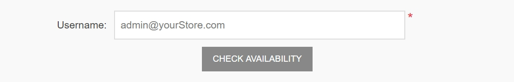

Customer settings
Customer settings include enabling customers to upload an avatar, showing customer location, changing name format or joining date, and more.
To define customer settings, go to Configuration → Settings → Customer settings. The customer settings window will be displayed. This window contains six panels: Common, Password and security, Account, Profile, Customer form fields, and Address form fields.
The Common panel contains general customer settings.
The Password and security panel contains fields that can be used to configure security settings and password complexity.
The Account panel contains fields for setting up a customer account.
The Profile panel contains fields for configuring the customer profile.
The Customer form fields panel contains fields that are used on the customer registration page.
The Address form fields panel contains fields for detailing the customer's address during checkout.
Common
Define the common customer settings as follows:
Select the Registration method as follows:
- Standard account creation: users are enabled to register; no approval is required.
- Email validation is required after registration: users are enabled to register; however, they must accept the confirmation email sent to them before their account is approved.
- A customer should be approved by administrator: users are enabled to register; administrator approval is required.
- Registration is disabled: select this option to disable registration.
Select the Notify about new customer registration checkbox to enable the store owner to get an email notification whenever a new customer is registered.
Select the Require registration for downloadable products checkbox if customers have to complete registration in order to purchase downloadable products.
Use the Allow customers to check gift card balance field to allow customers to check gift card balance.
Note
If the Allow customers to check gift card balance field is selected, then the CAPTCHA setting must be enabled in the admin area (Configuration → Settings → General settings → CAPTCHA panel). This feature is potentially not safe, and CAPTCHA is needed to prevent and complicate brute force. For more details, refer to the CAPTCHA settings.
Choose whether to Allow customers to select time zone in the public store on the accounts page. Otherwise, the default time zone is used.
Select the Default store time zone from the dropdown list.
Note
The current time zone is displayed automatically.
Select the Allow customers to remove associations to allow customers to remove external authentication associations.
Password and security
Set the Password minimum length, Password must have at least one lowercase, Password must have at least one uppercase, Password must have at least one non alphanumeric character, Password must have at least one digit to change password complexity.
Unduplicated passwords number is a number of passwords that mustn't be the same as the previous ones.
Select the Default password format as follows:
- Clear
- Hashed
- Encrypted
Note
This setting is for storing customers' passwords and will only be applied to newly registered customers.
In Password lifetime, enter the number of days for password expiration.
Note
To use the Password lifetime feature, don't forget to select Enable password lifetime property on the customer role edit page (Customers → Customer roles) for those roles that need to change passwords. For more details, refer to Customer roles.
In the Password recovery link. Days valid field, enter the number of days for the password recovery link. Set it to 0 if you don't want the link to expire.
Enter the Maximum login failures number. Set 0 to disable this feature.
In Lockout time (login failures), enter the number of minutes to lockout users.
Select the Force entering email twice checkbox if you want your customers to enter email twice during the registration.
Account

Select the 'Usernames' enabled checkbox to enable using usernames for login and registration instead of emails.
Note
It is not recommended to change this option in the production environment.
When the 'Usernames' enabled checkbox is selected, the following options will be displayed:
- Allow customers to change their usernames: select this option if customers are allowed to change their usernames.
- Allow customers to check the availability of usernames: select this option to allow customers to check the username availability before clicking the Save button on the My account - Customer info page. The Check availability button will be displayed in this case; see the example below.

- Select the Username validation is enabled field if you want to enable username validation (when registering or changing on the "My account" page in the public store). When this checkbox is selected, the following options will be displayed:
- Username validation rule: set the validation rule for a username in this field. You can specify a list of allowed characters or a regular expression. If you use a regular expression, select the Use regex for username validation field described below.
- Select the Use regex for username validation field to use a regular expression for username validation (when registering or changing on the "My account" page in the public store).
- Select the Customer name format as follows:
- Show emails
- Show usernames
- Show full names
- Show first name The customer name will be shown in the store next to the customer's news and blog comments, on the forum pages, and more.
- Select the Phone number validation is enabled checkbox if you want to enable phone number validation (when registering or changing on the "My account" page in the public store). When this checkbox is selected, the following options will be displayed:
- Phone number validation rule: set the validation rule for a phone number in this field. You can specify a list of allowed characters or a regular expression. If you use a regular expression, select the Use regex for username validation field described below.
- Select the Use regex for phone number validation field to use a regular expression for phone number validation (when registering or changing on the "My account" page in the public store).
- Allow customers to upload avatars: the customers' avatars will be shown in the store next to their news and blog comments, on the forum pages, and more. If this option is selected, the following checkbox will be displayed:
- Select the Default avatar enabled checkbox to display the default user avatars.
- Select the Hide 'Downloadable products' tab checkbox to hide this tab on the "My account" page.
- Select the Hide 'Back in stock subscriptions' tab checkbox to hide this tab on the "My account" page.
- Select the Hide newsletter box checkbox if you do not want to display the newsletter subscription box.
- Select the Newsletter box. Allow to unsubscribe checkbox to display the "unsubscribe" option in the newsletter block. For example, it's required in Germany.
- Select the Store last visited page checkbox to store the customer's last visited page. You can then view the pages last visited by customers on the Customers → Online customers page. You can clear this checkbox to improve the site performance.
- Select the Store IP address checkbox to store the last IP addresses of customers. When disabled, it can improve performance.
Profile
- Allow viewing of customer profiles: this setting enables to see the details of other customers in the public store.
- Select the Show customers location checkbox if required.
- Select the Show customers join date checkbox if required.
Customer form fields
In the Customer form fields panel, define whether the following form fields are enabled in the system:
- 'Gender' enabled
- 'First name' enabled. When enabled, you can also decide whether this field should be required.
- 'Last name' enabled. When enabled, you can also decide whether this field should be required.
- 'Date of Birth' enabled. When enabled, you can also decide whether this field should be required and enter a minimum allowed age (for example, to ensure that a customer is above 18).
- 'Company' enabled. When enabled, you can also decide whether this field should be required.
- 'Street address' enabled. When enabled, you can also decide whether this field should be required.
- 'Street address 2' enabled if the second street address is enabled. When enabled, you can also decide whether this field should be required.
- 'Zip/postal code' enabled. When enabled, you can also decide whether this field should be required.
- 'City' enabled. When enabled, you can also decide whether this field should be required.
- 'County/region' enabled. When enabled, you can also decide whether this field should be required.
- 'Country' enabled. When enabled, you can also decide whether this field should be required.
- 'State/province' enabled. When enabled, you can also decide whether this field should be required. Note: This field only is visible when the Country field is enabled.
- 'Phone number' enabled. When enabled, you can also decide whether this field should be required.
- 'Fax number' enabled. When enabled, you can also decide whether this field should be required.
- Select the 'Accept privacy policy' enabled checkbox to request customers to accept the privacy policy during the registration.
- Select the 'Newsletter' enabled checkbox to offer customers a newsletter subscription during the registration.
- When the 'Newsletter' enabled checkbox is selected, the Newsletter ticked by default checkbox will be displayed. This automatically sets the 'Newsletter' checkbox on the registration page as selected.
Custom customer attributes
If the default form fields are not enough for your requirements, you can manage additional customer attributes using this table. Customer attributes are created in the same manner as checkout attributes. For further details, refer to Checkout attributes.

Address form fields
In the Address form fields panel, a store owner can manage the address form fields available during the registration. You can select which fields are enabled and required among the following:
- 'Company' enabled. When enabled, you can also decide whether this field should be required.
- 'Street address' enabled. When enabled, you can also decide whether this field should be required.
- 'Street address 2' enabled if the second street address is enabled. When enabled, you can also decide whether this field should be required.
- 'Zip/postal code' enabled. When enabled, you can also decide whether this field should be required.
- 'City' enabled. When enabled, you can also decide whether this field should be required.
- 'County/region' enabled. When enabled, you can also decide whether this field should be required.
- 'Country' enabled. When enabled, you can also decide whether this field should be required.
- 'State/province' enabled. When enabled, you can also decide whether this field should be required. Note: This field is only visible when the Country field is enabled.
- 'Phone number' enabled. When enabled, you can also decide whether this field should be required.
- 'Fax number' enabled. When enabled, you can also decide whether this field should be required.
Custom address attributes
Note
If the default address fields are not enough for your requirements, you can manage additional address attributes using this table. Address attributes are created in the same manner as checkout attributes. For further details, refer to Checkout Attributes.
Click Save at the top of the page.